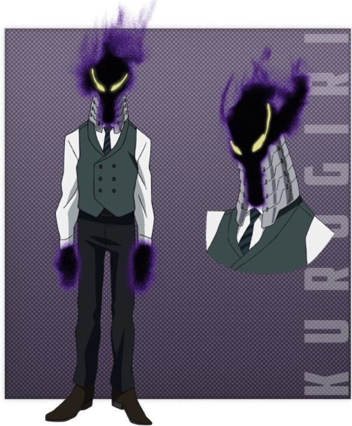

|
死柄木弔／志村轉弧
「敵人Villain聯軍」領袖。
生日：4月4日 身高：175cm 年齡：20歲 喜歡的事物：沒有
穿著黑色緊身衣和紅色運動鞋，身材纖細的詭異男性。全身上下被十四隻斷手[註 13]緊緊握住，斷手底下的瞳孔為紅色。死柄木臉上的那隻斷手來自他的父親，也是志村菜奈之子，志村弧太郎。
是志村菜奈的孫子。他畢生的信念是毀壞現今的社會與體制。被歐爾麥特評價為「像幼兒般自我中心的大孩子」。有著戰鬥時會分析對方的個性並進攻的靈活腦袋。把襲撃人稱之為「遊戲」，被人罵或是陷入困境時會氣惱緊張而露出其精神面的幼稚。被「老師」表示要死柄木成為下一個他，覺得死柄木一定能成功，死柄木可是連同扭曲一起來到這個世間的男人。
為抹殺歐爾麥特而派出大量敵人Villain前往雄英學生們正在進行演習的USJ，後來因為學生們的努力奮鬥加上職業英雄的到來而撤退。利用受英雄殺手的理念而影響的人來聚集有意反抗現今社會的人士，目的為毀壞現今的社會跟體制。
當被「死穢八齋會」的治崎等人找上後，決定同意和對方合作，並派TWICE和渡我前去該會的本部。
|
個性：崩壞（崩壊）
能夠使五隻手指碰到的東西逐漸粉碎崩壞，威力強大到連雄英防護壁都能夠輕易破壞。在與異能解放軍的戰鬥中個性進化到可以把崩壞傳遞到沒碰到的物體上。
|
|  |
黑霧（urogiri）
「敵人Villain聯軍」領袖輔佐。
生日：不明／身高：不明／年齡：不明／喜歡的事物：不明
是個身體由黑霧包住，頭上穿戴護甲，穿著西裝的男性，常以周到殷勤的語氣說話。
襲擊USJ時擔任將大量的敵人Villain送入、以及用「空間跳躍門拆散雄英學生們的工作。將學生們用空間跳躍門分散後，將13號製造出來的黑洞用空間跳躍門將位置轉換到他的背後使其背部重創。之後配合脳無企圖把歐爾麥特的身體扯成兩半。看似像沒有實體的煙霧人，其實是用黑霧將實體包裹覆蓋住，頭上的護甲就是有實體的證明。後來這弱點被趕上的爆豪看破並遭到其打擊。最後在歐爾麥特快撐不住時隨著雄英教師群的到來選擇與死柄木一同撤退。
在死穢八齋會事件期間，已遭到警方逮捕。
|
個性：空間跳躍門（ワープゲート）
- 個性：空間跳躍門（ワープゲート）
使用身體的黑霧構成異空間通道傳送大量的人到目的地，能同時製造多個通道、將人的部位分離作為奇襲、也能將空間跳躍門當作防禦手段，此外還能將13號的黑洞用空間跳躍門將位置調換。屬於座標傳送，知道位置便可傳送，反之不知道位置就無法使用。
其軀體變成空間跳躍門的部位是有限的，看似像沒有實體的煙霧人，其實只是實體被黑霧覆蓋住所造成的假象。
-
-
|
|
荼毘（荼だ毘び，Dabi）
敵人Villain聯軍「開闢行動隊」指揮
生日：不明／身高：不明／年齡：不明／喜歡的事物：不明
本名不詳，以荼毘這個名字為代稱。有全身都是燒傷的痕跡與皮膚接皮膚拼接起來的的外貌特徵。其實沒犯過什麼大事或罪，但對於英雄殺手的思想表現出了異乎尋常的執著，希望完成英雄殺手的意志，糾正這個社會，曾表示自己很弱。 最初由經紀人義爛推薦與渡我被身子一起加入「敵連合」。襲擊雄英合宿一戰，擔任開闢行動隊的指揮，最初讓TWICE用自己的分身去襲擊相澤消太，並懷疑敵人Villain聯軍的真實目的，最後成功將爆豪抓回，並向追來的轟焦凍表示相當可憐。神野區大戰後，與敵人Villain聯軍暫時分散是為了干擾搜查以及收集同志並擴大組織的規模。
|
個性：蒼炎
可以用手掌隨意施放強大藍色高溫火焰的能力，但無法長時間使用，一旦使用過度就會對自身造成傷害，其身上的大量灼傷很可能是個性過度使用造成的。
|
|
渡我被身子（渡我 被身子トガ ヒミコ，Toga Himiko）
敵人Villain聯軍「開闢行動隊」一員。
生日：8月7日／身高：157cm／年齡：17歲／喜歡的事物：血、石榴
擁有如同吸血鬼般的虎牙與和黃褐色頭髮等外表特徵。看起來是像是位可愛的高校女生，儘管媒體一直都沒有公開她的真實姓名和長相，但她是連續致死事件的通緝犯。崇拜並希望成為英雄殺手，而其扭曲的想法甚至想親手殺了英雄殺手。特別喜歡遍體鱗傷散發血之芬芳的人，所以總是會帶著小刀想刺傷他人，見到滿身傷的綠谷而對綠谷似乎有意思。 最初由經紀人義爛推薦與渡我被身子一起加入「敵連合」。
襲擊雄英合宿一戰，拿到麗日的血。在臨時英雄執照考試時，使用能力變身成士傑高校的凱米潛入試場找上綠谷，之後又再使用個性轉變成麗日的樣子接觸綠谷但被識破，後來真正的麗日與瀨呂等人加入戰局，便恢復成凱米的樣子走掉並獨自順利過關。在脫離同校的團體後恢復原形，並表示成功取得綠谷的血。
在「死穢八齋會」頭領與敵人Villain聯軍談合作一事，但談判破裂，後當「死穢八齋會」找上門後，被死柄木派往對方的大本營。當英雄們與警察一起參與進攻死穢八齋會時，拖延綠谷等人，其後與TWICE一起利用英雄們打倒死穢八齋會以達到死柄木的目的，期間曾變成綠谷的樣子指示麗日等人。
|
個性：變身（変身）
取得對方血液並喝下，就可變身成血液主人的外貌。變身的時間與攝取量成正比，一杯血的量大概能維持一天。
|
|
TWICE／分倍河原仁（トゥワイス／分ぶ倍ばい河が原わら 仁じん)
敵人Villain聯軍「開闢行動隊」一員
生日：5月10日／身高：178cm／年齡：31歲／喜歡的事物：菸草
穿著一身黑色裝扮的敵人Villain，真面貌是額頭上有傷痕的大叔。經常分身其言語行動支離破碎。是個喜歡吐槽的角色，常說反話。過去在某次本體和分身們開始開始內訌，每個都自稱自己才是本體，因為分身受傷達到一定程度，就會消失。於是互相殘殺，12天後只留下一個瘋了的本體，最後連自己到底是誰逼瘋了本體，幻想出另一個「我」，形成了現在的雙重人格。襲擊雄英合宿一戰，替荼毘製造分身來混淆戰況。神野區大戰後，找上「死穢八齋會」頭領翻修，帶來敵人Villain聯軍基地談合作一事，但談判破裂，後當「死穢八齋會」找上門後，被死柄木派往對方的大本營。
|
個性：二倍（二倍）
能把任何物體從1增加到2的簡單力量，條件是必須對拷貝對象有明確的形象，否則只會變處失敗的半成品。如果是活人就必須有身高、胸圍、鞋號等各種數據。而拷貝品與本體唯一的差別在耐久力，雖有個體差異，但只要承受一定的傷害就會消散。
|
|
Mr.壓縮／迫壓廣（Mr.ミスター コンプレス／迫さこ 圧あつ紘ひろ）
敵人Villain聯軍「開闢行動隊」一員
生日：不明／身高：不明／年齡：不明／喜歡的事物：不明
佩戴面具和高帽裡面帶著面罩的謎一般的敵人Villain，自稱是「藝人」。
襲擊雄英合宿一戰的尾聲，悄悄的使用個性捉走了爆豪與常暗，準備離開時被青山突擊，只有抓到原定目標的爆豪。
神野區大戰後，在「死穢八齋會」頭領與敵人Villain聯軍談合作一事，但談判破裂與「翻修」起衝突，反遭對方利用「個性」攻擊，被炸裂一整隻左手臂。
|
個性：壓縮（圧縮）
可以壓縮體積後把目標物封進小球內。
|
|
紡織者／伊口秀一（スピナー／伊い口くち 秀しゅう一いち）
敵人Villain聯軍「開闢行動隊」一員
生日：8月8日／身高：174cm／年齡：21歲／喜歡的事物：遊戲
外貌長得像是蜥蜴人，持戴大量武器的敵人Villain。
是英雄殺手的崇拜者，因追隨他的理念而加入敵人Villain聯軍，自稱「夢的編織者」。襲擊雄英合宿一戰，與馬格姐行動打傷了北美短毛貓，對上了曼德勒貓與虎。認為出久是英雄殺手救過的人，是足以擔當英雄之名的人，所以在要攻擊出久時進行了阻止。
死柄木襲擊被警察運送的「翻修」時，對攻擊警察的行為感到厭惡。
|
個性：壁虎（ヤモリ）
擁有壁虎的外表與特徵，可以爬行在牆上。
|
|
磁人／引石健磁（マグネ／引ひき石いし 健けん磁じ，Magne／Hikiishi Kenji）
敵人Villain聯軍「開闢行動隊」一員。
生日：不明／身高：不明／年齡：不明／喜歡的事物：不明
暱稱「磁姐」，喜歡別人這樣叫他。
特徵是墨鏡、鬍渣、長髮和厚唇的敵人Villain。襲擊雄英合宿一戰，與紡織者行動打傷了北美短毛貓，對上曼德勒貓與虎。
在「死穢八齋會」頭領與敵人Villain聯軍談合作一事，但談判破裂與翻修起衝突，反遭對方使用「個性」攻擊導致上半身炸裂慘死。被渡我稱為「瑪麗姐」，他的死讓渡我感到惋惜。有一個同性別女裝癖好的戀人。
|
個性：磁力（磁力）
能對周圍5公尺內的物體產生磁力來相吸或互斥，女性為N極，男性為S極。
|
|
爆肌（マスキュラー，Muscular）
敵人Villain聯軍「開闢行動隊」一員。
生日：不明／身高：不明／年齡：不明／喜歡的事物：不明
原死刑犯，是個冷血的犯罪者，有著義眼特徵的敵人，對自己的「個性」極其滿意從而傷害別人。
兩年前和洸汰的父母沃特豪斯戰鬥過，最終殺害了他們，左眼也是那時所傷到，現在為假眼。
襲擊雄英合宿一戰找上洸汰，襲擊之時但被綠谷保護，並表示敵人Villain聯軍其目的是要抓走爆豪，以強大力量和速度壓制綠谷，導致綠谷身負重傷，多處骨折，在打壓綠谷時被洸汰使用個性噴水導致肌肉收縮，還未反應過來被突襲，最後被綠谷擊中臉部落敗。
最後遭到開闢行動隊拋棄，現被警方逮捕。
|
個性：肌肉增強（筋肉増強）
能使肌肉全面的提高速度和力量，但肌肉會突破表皮。
|
|
Moonfish 翻車魚（ムーンフィッシュ）
敵人Villain聯軍「開闢行動隊」一員。
生日：不明／身高：不明／年齡：不明／喜歡的事物：不明
原死刑犯，逃獄中，穿著拘束衣的敵人，其戰鬥經驗豐富。
性格有點奇怪，說話有點緩慢。襲擊雄英合宿一戰對上了爆豪和轟，其戰鬥使爆豪和轟處於下風，被失控暴走的常暗黑影秒殺。
最後遭到開闢行動隊拋棄，現被警方逮捕。
|
個性：齒刃（歯刃）
可從嘴巴伸出複數且能自在變化的牙齒利刃，甚至可配合地形攻擊。 |
|
芥氣（マスタード，Mustard）
敵人Villain聯軍「開闢行動隊」一員。
生日：不明／身高：不明／年齡：不明／喜歡的事物：不明
帶著毒氣面具的敵人，樣子看上去似乎是一名中學生。
使用武器為槍，不擅長近身戰鬥。襲擊雄英合宿一戰依照計畫釋放毒氣擾亂雄英，後來被學生中的拳藤與鐵哲發現便與其對上，最後被拳藤與鐵哲的合作擊敗。
最後遭到開闢行動隊拋棄，現被警方逮捕。
|
個性：毒氣（ガス）
以自己為中心釋放毒氣，可以操控自己釋放的毒氣，在毒氣中生物的行動也都將通過毒氣傳達給他。但自己對毒氣沒有免疫，所以臉上要帶防毒面具。
|